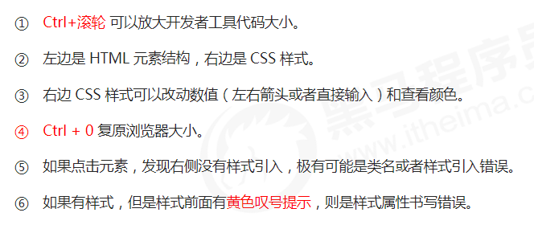

CSS简介
简介
HTML只关注内容的语义，有“丑”的特点。只能做简单的样式
CSS是层叠样式表的简称（Cascading Style Sheets），主要用于设置HTML页面中的文本内容（字体、大小、对齐方式等）、图片外形（宽高、边框样式、边距等）以及版面的布局和外观显示样式
简而言之，CSS可以美化HTML。HTML专注做结构呈现，样式交给CSS，即结构和样式分离
语法规范
CSS规则由两个主要的部分构成：选择器以及一条或多条声明
1 | h1 {color:red;font-size:25px;} |
- 选择器：用于指定CSS样式的HTML标签，花括号内是对该对象设置的具体样式
- 属性和属性值以“键值对”的形式出现
- 属性是对指定的对象设置的样式属性，例如字体大小、文本颜色等
- 属性和属性值之间用英文”:”分开
- 多个键值对之间用英文”;”分开
所有的样式都包含在<style>内，表示是样式表。<style>一般写在</head>上方
1 | <head> |
代码风格
- 样式格式书写推荐：
1 | h3 { |
样式大小写：除特殊情况外，一般推荐全部使用小写字母
空格规范：
- 属性值前面，冒号后面，保留一个空格
- 选择器（标签）和大括号之间保留空格
CSS基础选择器
作用
选择器（选择符）是根据不同需求把不同的标签选出来。简而言之，是选择标签用的。
1 | h1 { |
以上代码做了2件事：
- 找到所有h1标签，选择器
- 设置这些标签的样式
分类
选择器分为基础选择器和复合选择器两个大类。
基础选择器：由单个选择器组成，包括标签选择器、类选择器、id选择器、通配符选择器
标签选择器
即用HTML标签名称作为选择器，按标签名称分类，为页面中某一类标签指定统一的CSS样式。
语法如下：
1 | 标签名 { |
其优点是：能快速为页面中同类型的标签统一设置样式
而缺点是：不能设计差异化样式，只能选择全部当前标签
类选择器
若想差异化选择不同的标签（单独选一个或某几个标签，可以使用类选择器）
1 | .类名 { |
例如，将所有拥有 red 类 HTML元素设为红色
1 | .red { |
对应地，元素如何调用 class 类呢？需要使用class 属性
1 | <div class='red'>变红色</div> |
注意，类选择器在HTML中以class属性显示，在CSS中则以.显示
- 长名称或词组可以使用中横线来为选择器命名
- 尽量使用英文字母命名
多类名
事实上，我们可以给一个标签指定多个类名，从而达到更多的选择目的
简单理解，就是一个标签有多个名字
多类名使用方式
1
2
3<div class="red font20">
Anthor
</div>- 在标签class属性中写多个类名，多个类名之间必须以空格分开
多类名使用场景
- 可以把元素相同的样式放到一个类里
- 任何标签可以调用公共的类，然后再调用自己独有的类
id 选择器
可以为标有特定 id 的HTML元素指定特定的样式。由id的性质可知，元素之间id一定不同。
该选择器一般和js搭配
1 | #id名 { |
类选择器和 id 选择器的区别
- 类选择器好比人的名字，可重复，一人可有多个名字
- id 选择器好比身份证号码，唯一不可重复
- 最大的不同在使用次数上
通配符选择器
CSS中，通配符选择器使用*定义，表示选取页面中所有元素（标签）
1 | * { |
特殊情况才使用，例如清除所有的元素标签的内外边距：
1 | * { |
字体属性
CSS 字体属性用于定义字体系列、大小、粗细和样式
字体系列
CSS使用font-family属性定义文本的字体系列。
1 | p { |
- 各种字体之间必须使用英文逗号隔开
- 如果有空格隔开的多个单词组成的字体，加引号
- 最常见的几个字体：”Microsoft Yahei”, tahoma, arial, “Hiragino Sans GB”
字体大小
font-size用于定义字体大小。单位通常为px（像素）。Google默认的文字大小为16px。不同浏览器默认显示的字号大小可能不一致，尽量明确值。
可以给body指定整个页面文字的大小
字体粗细
font-weight
| 属性 | 描述 |
|---|---|
| normal | 默认值，不加粗 |
| bold | 粗体 |
| 100-900 | 400即normal，700即bold，该数字后不跟单位 |
实际开发中，用数字更多。
文字样式
font-style
| 属性值 | 作用 |
|---|---|
| normal | 默认 |
| italic | 斜体 |
一般很少给文字加斜体，反而要将斜体标签（em，i）改为不倾斜字体
复合属性
以上文字样式可以综合成为复合属性：
1 | body { |
使用font属性时，必须按上面语法格式中的顺序书写，不能更换顺序，并且各个属性间以空格隔开
不需要设置的属性可省略，但必须保留font-size和font-family属性。
文本属性
文本属性可定义文本的外观，比如颜色、对齐、装饰、缩进、行间距等
文本颜色
color
| 表示 | 属性值 |
|---|---|
| 预定义的颜色值 | red, green, blue |
| 十六进制 | #FF0000, #FF6600 |
| RGB代码 | rgb(255, 0, 0)或rgb(100%, 0%, 0%) |
开发中常用十六进制
对齐文本
text-align
| 属性值 | 解释 |
|---|---|
| left | 左对齐（默认值） |
| right | 右对齐 |
| center | 居中 |
装饰文本
text-decoration，可以给文本添加下划线、删除线、上划线
| 属性值 | 描述 |
|---|---|
| none | 默认，无装饰 |
| underline | 下划线，链接a自带下划线 |
| overline | 上划线 |
| line-through | 删除线 |
文本缩进
text-indent指定文本第一行的缩进，通常是将段落的首行缩进
此处引入一个新的单位em，这是一个相对单位，就是当前元素（font-size）一个文字的大小。
1 | p { |
行间距
line-height用于设置行间的距离，可以控制文字行和行之间的距离
引入方式
三种样式表
根据CSS样式的书写位置（引入方式），可分为三大类
- 行内样式表（行内）
- 内部样式表（嵌入）
- 外部样式表（链接）
内部样式表
即写到html页面内部，将所有的CSS代码抽取出来，单独放到一个<style>标签中
理论上，<style>可以放在HTML文档中的任何地方，但一般会放在<head>标签中
这种形式并没有实现结构与样式完全分离
行内样式表
即在元素标签内部的style属性中
Chrome 调试工具
打开调试工具
打开Chrome，按下
F12键或者右击页面空白处→检查
其他
分割线
1 | <hr> |

...
...
This is copyright.